About Me
Hello, I'm Shiv, a passionate product designer who has 2 year's worth of design experience across all fields.
Front-end Development
80%UI/UX Design
90%Teamwork / Communication
100%2
Years of UI/UX design work experience
3
Years of studying Interaction Design and Marketing
4
Professional projects
6.5
GPA at Victoria University of Wellington
Recent works
- All
- UI/UX Design
- Front-end development
Trade Me

Trade Me
During my time as a product design intern, I joined the marketplace Mo-Buyer team and worked on redesigning structured feedback and IOS payment cards with the squad.
Responsibilities involved attending daily stand ups, contributing in team meetings such as refinements, ideations, and shipping sprints, as well as participating in design retro's with the CMP design team.
All designs went through iteration stages which were discussed during team meetings to figure out which designs met user goals as well as meeting the scope for the project. Working with the Mo-Buyer squad taught me how to work in a team setting to achieve sprints using agile methodologies.
Creating these designs for both structured feedback and IOS payment cards taught me the importance of accessibility friendly designs from a user's point of view while balancing the overall scope goal.
Wellington Rape Crisis

Wellington Rape Crisis
Redesigning the Wellington Rape Crisis website.
This was a charity project which was completed in one trimester with a group of 7 at Ignite consultants. Ignite is a partnership between students and socially conscious organisations to help maximise their impact.
I was responsible for creating the user interface while making sure the UX was at a high standard.
The problem with the original website was that it was visually lacking. This resulted in a website that didn't feel safe for users.
The design was aimed towards all users that have been sexually assaulted. We used a distinct colour palette to represent their core values which are feminist, sustainable, informed, and holistic.
The design process started with initial research figuring out what the user group are looking for in a website. Finding ways to display content without overwhelming the user was something that was thought of before designing. Once we figured out how the user will interact on the website, we started creating low-fidelity wireframes to figure out the optimal layout. We tested these iterations with our stakeholders to figure out which one suits the target audience the best. After this, we started creating high-fidelity prototypes by creating a style guide with all the elements that we want to use on the website. Just like the low-fidelity wireframes, we were constantly testing these colours to create a safe space for users that use WRC.
What I've learnt from this project is how to communicate and work with a small team for a big project.
WRC WebsiteFitTrition
FitTrition - Capstone Project
The current problem with nutrition apps is that meals recommended are not based on intensity levels after a workout. FitTrition aims to solve this issue by reminding users on when and what to eat before and after a workout to supplement their nutritional goals for increased performance and recovery. The overall goal is to maintain motivation towards eating and exercising.
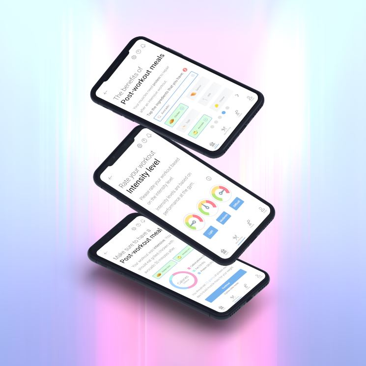During the research phase, I sent my participants a cultural probe pack to figure out the problems with their eating before and after a workout. My participants were undergoing intensive workouts, but they were not eating the correct meals afterwards. This needed to be changed. Secondary research was conducted to figure out what motivated users while exercising / eating healthy. Social activity increased accountability to exercise. Rewarding the user engaged in an activity for the purpose of mastery. Incorporating indicators were used as a motivational tool for students of all abilities.
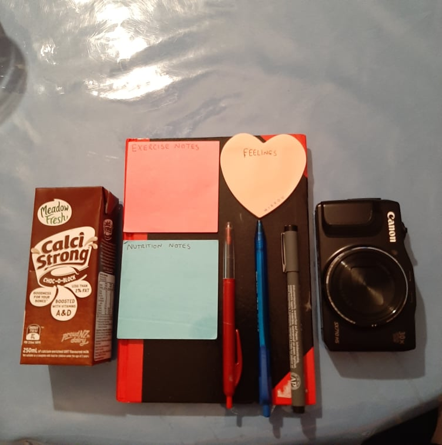
The cultural probe findings allowed me to create a customer journey map which showed the experiences of my target audience which were users that were looking to gain and lose weight. Users that skipped a pre-workout meal tend to not perform well at the gym, which resulted in them also skipping a post-workout meal.
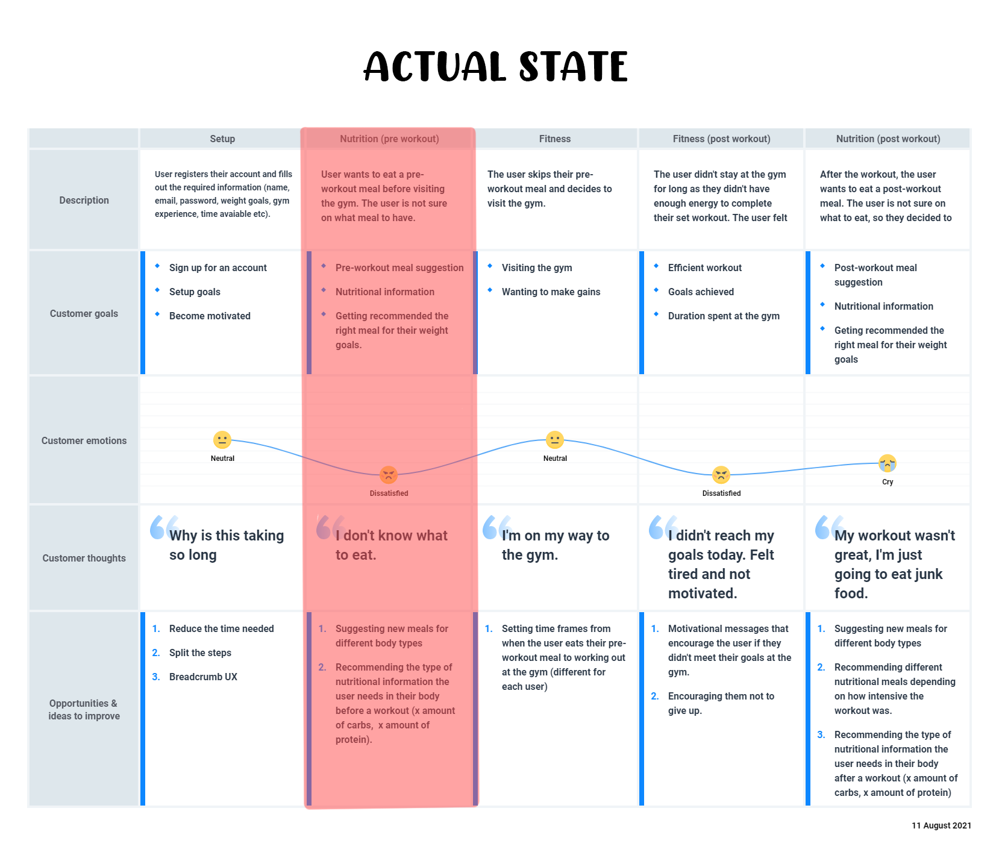The user goal was to provide a delightful experience when recommending meals before and after a workout. I followed a double diamond approach throughout to ensure that I was meeting all areas in the design. Semi-structured interviews were undertaken to understand how they would set up their meals before and after a workout. More secondary research was carried out to figure out when and what meals were recommended to eat before and after a workout for different body types. The design would follow three tasks flows which were “getting recommended meals depending on their desired needs”, “communicating with friends on recent achievements”, and “claiming rewards from those achievements”. After this research had been completed, I was able to create a second customer journey map which would show the app’s desired state for the user.
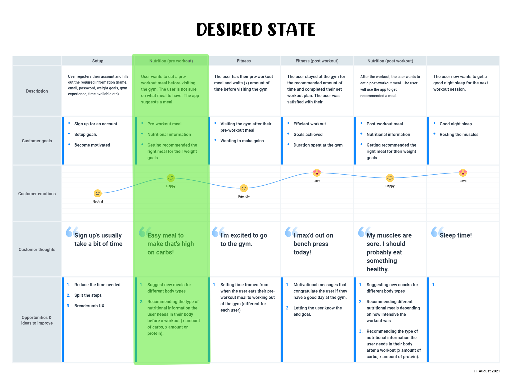My final piece of research focused on how meals differentiate based on intensity levels. This idea focused on the Basal Metabolic Rate which figures out how many calories our body burns through resting. This number is different depending on factors such as gender, age, weight, and height. From the BMR, I was able to calculate the Total Daily Energy Expenditure by asking the user on their activity levels, how many times they exercise, and their intensity levels. This calculation would then be split depending on how many meals the user eats every day.
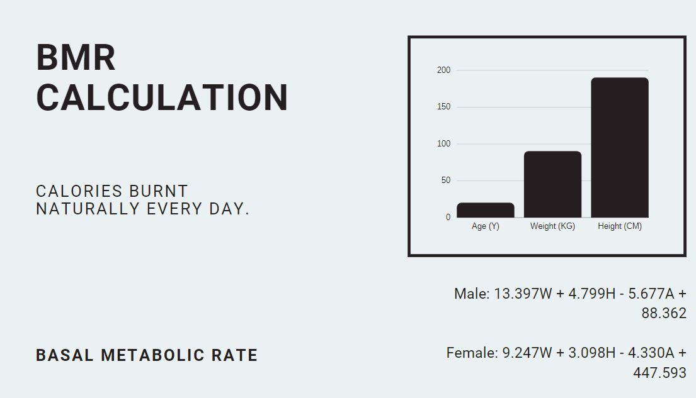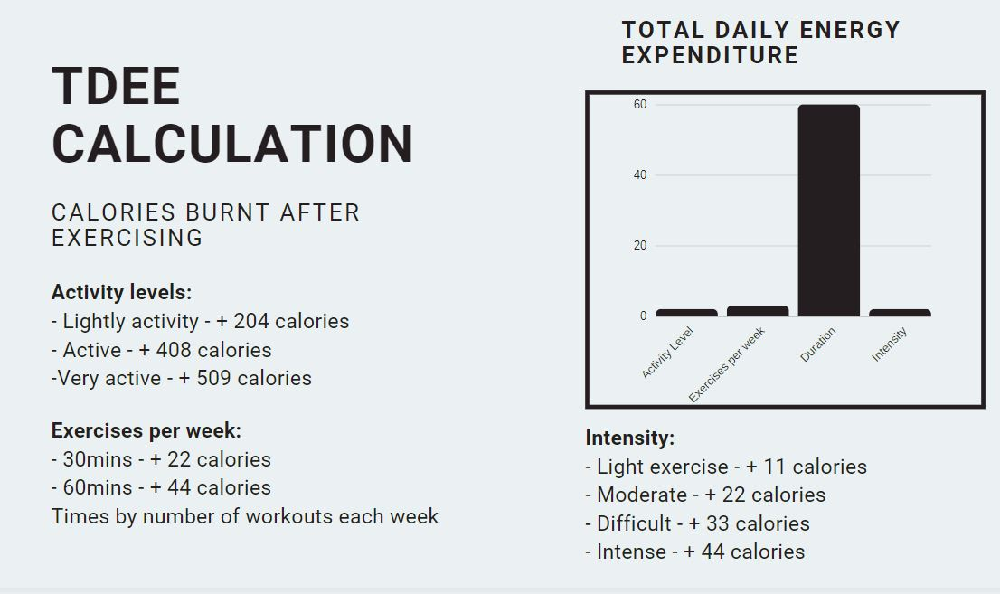
This project has taught me the importance of eating healthy to supplement fitness goals before and after a workout. This design caters this idea by following accessibility principles to ensure that it’s user friendly.
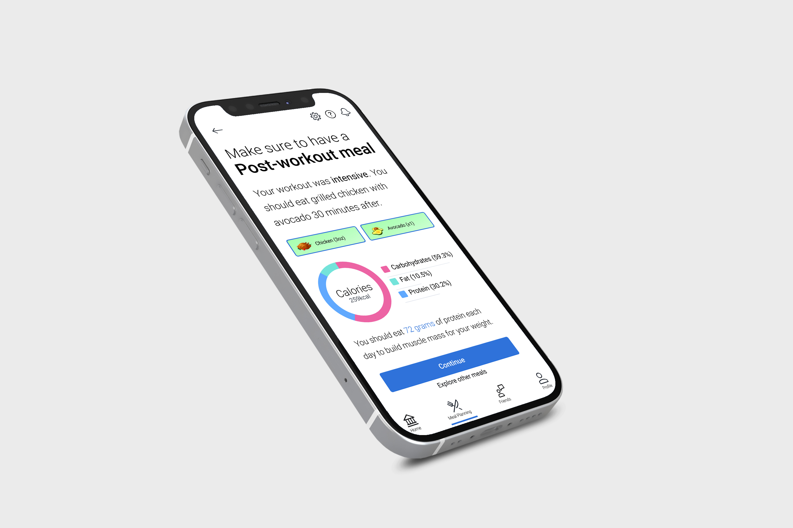FitTrition Product Video
Growing Old in an Adopted Land
Growing Old in an Adopted Land
The problem was not having an accessible platform for migrant communities in Aotearoa.
The goal was to create a website that focused on migrant communities in New Zealand and investigate their ageing experiences. The target audience was aimed towards old users (65+) who would be interested in taking part in the research after learning about it. Ensuring that the website was accessible to this demographic was crucial for a successful outcome.
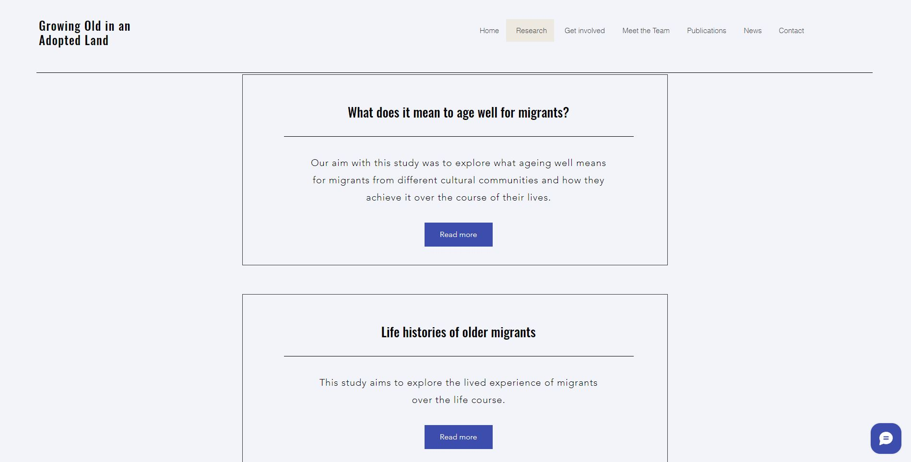This website revolves around learning about the research that Dr Agnes Szabo has undertaken at Victoria University of Wellington. Agnes is a senior lecturer in Health. Growing Old in an Adopted Land is a research project that focuses on areas of health, ageing and immigration in Aotearoa. The website allows the user to meet members of the project, as well as reading publications of the research. If a participant is interested in the project, they are able to get involved by signing up using the contact form.
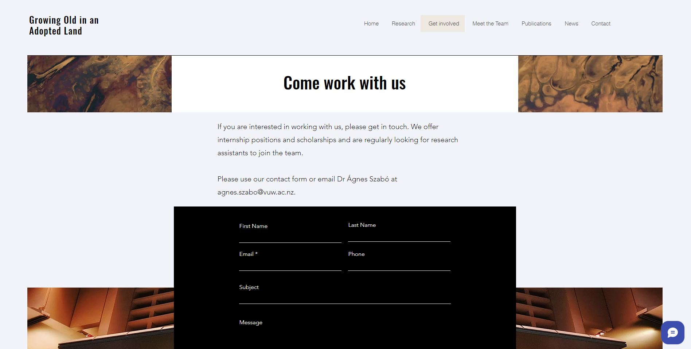My process involved creating low-fidelity wireframes to get an initial idea on layout and the user goals. I had weekly meetings with my client to ensure I met her needs as well as the users. Once these mockups were at a high level, I started developing in Wix. Creating a website that old users could use while maintaining accessbility throughout different devices were my two main goals for this project. After the development phase was completed, User testing was undetaken with the target audience. I was able to figure out the underlying problems with old users navigating the website and create solutions to make their experience enjoyable and user friendly.
This project has taught me the importance of designing for old users, as well as developing a website in a professional matter for a client.
View WebsiteEngoo - Tutor Hiring Process

Engoo - Tutor Hiring Process
The goal was to redesign Engoo's current tutor hiring process as there were many paint points which lead to frustration, not time-efficient, and an unclear process.
The challenge was to create a friendly interaction that informs users on how to upload a legal identification photo using relevant UI patterns and techniques.
This design will need to be:
- User friendly
- Reduce pain points
- Have a clear user flow
- Aesthetically pleasing
- Meet user experience laws
- Perceive affordances
I was designing for users that may not have English as their first language. This meant I needed to use clear mental models throughout the process.
The process started with me researching about the current website. Identifying the problems using UXLaws helped me figure out what needed to be change. User persona diagrams were used to get a deeper understanding on Engoo's problem. From this, I created a user flow diagram which highlighted the subtle and main pain points during the interaction. A journey map was conducted to figure out the experiences that a user has when signing up.
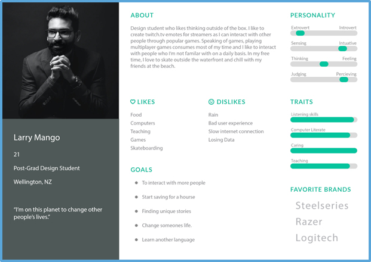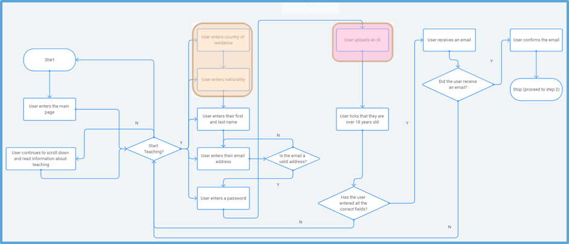
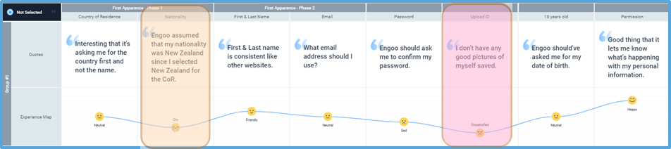
After the research was conducted, I started creating low-fidelity wireframes to get an understanding on the app's structure. I conducted multiple user tests to figure out what worked well and what didn't. After my participants were satisfied with the layouts and interactions, I starting creating high-fidelity prototypes that incoporated a delightful design towards it. Ensuring that accessibility was met was crucial for this interaction to be successful.
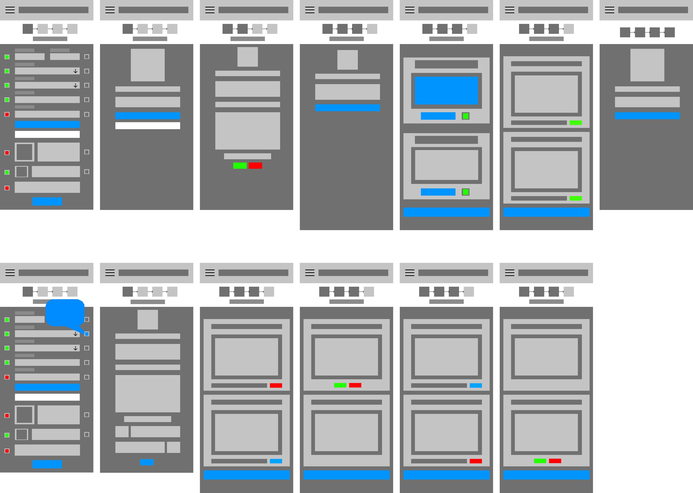What I've learnt from this project is how I can improve on designing for style. Initially, my app was lacking on the design as it felt like it was from the 2000's. I decided to go back to this project and revamp the entire app to make it up to date.
View on FigmaSudoku Case Study
Sudoku - KraiSoft
The goal was to recreate the mobile game Sudoku for KraiSoft.
This project required a statistics and a leaderboard screen. These screens provide players with information about their gaming activity and allow them to compare their achievements with other players.
The statistics screen included the total number of games played, the average completion time per game and a percentage of successfully completed games
The leaderboard screen focused on the top 10 players with the highest scores for each difficulty level the ability to switch between difficulty levels, and include information about the number of games played and the average completion time for each player.
This iteration of Sudoku is intuitive and follows general principles of user interface design. The colour palette used highlights key elements and ensures text readability. The typography is legible and readable on different devices.
Designs began with low-fidelity wireframes figuring out the layout and how the user will interact with the game. After conducting user testing and observations, high-fidelity prototypes were created to make the app look nice.
What I've leant from this project is how to research and design a game from scratch that uses common user interface practices.
View on FigmaExperience
Digital Designer - CityFitness
Designer responsible for producing engaging content and compelling visual assets that elevate the brand.
Programming Tutor - SPCodes
Business owner | Tutoring computer science to kids. Languages include Python & Javascript. Responsibilities include designing all of the worksheets, managing student progress, and communicating with parents.
UI Developer - Victoria University of Wellington
Research assistant to help design & develop a portfolio using Figma & EditorX
Product Designer - Trade Me
Product Designer at Trade Me. Projects include working on IOS payment cards and structured feedback designs for CMP.
Teaching Fellow - Victoria University of Wellington
Teaching Web Design to students at Victoria University of Wellington. Responsibilities include delivering lectures, updating the course outline, and marking assignments.
Coding Tutor - Grand Training
Tutoring computer science to kids. Languages include Python, Javascript, & Scratch.
UI Designer - Victoria University of Wellington
Research assistant to help develop a website on ageing using accessibility principles.
UI/UX Designer - Wellington Rape Crisis
Designed a new website for Wellington Rape Crisis.
Bachelor of Design Innovation
Studied Interaction Design and Marketing at Victoria University of Wellington.
Tawa College
Recipient of the Dean's Merit Award. Design Information Technology - Excellence Endorsed.